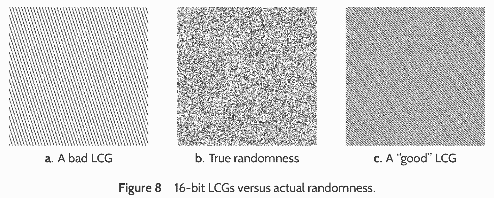
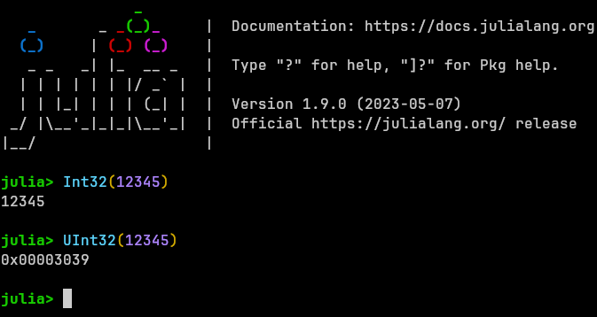
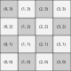

Calcolo numerico per la generazione di immagini fotorealistiche
Maurizio Tomasi maurizio.tomasi@unimi.it
You have surely already dealt with random numbers, probably to perform Monte Carlo simulations (see e.g. the TNDS course).
In this course we will not address the problem of random number generation in detail, but we will use a series of results without proving them.
The context of photorealistic images is interesting to verify the operation of a random number generator: if the quality of the generator is not excellent, you spot it immediately!
A pseudorandom number generator is usually implemented as a state machine, i.e., an algorithm that keeps information about its state in memory, which is updated every time it produces a new number.
The generators used today usually produce integer numbers in a given range.
Being only pseudo-random, if you know the last number drawn and the state of a generator, you can predict what the next number will be (determinism). This can be an advantage!
The numbers it produces should be “random” (see the Wikipedia entry Randomness test)…
…but also predictable!
Numbers taken in pairs/triples/quadruples/etc. should continue to be “random”.
It should be fast to execute.
It should be possible to quickly advance its internal state: this property is called seekability.
A deterministic pseudo-random number generator must have a certain period N: once N values have been extracted, it is doomed to repeat the sequence again (or, in rare cases, to stop).
It is important that the first N values are distributed as uniformly as possible.
It is also important that the period is sufficiently long!
(In the study of the PICO satellite we had encountered strange results, due to the fact that the period of the generator was “only” 2^{32} and therefore after a certain time the code reviewed the same numbers from the beginning.)
Since pseudo-random numbers are used for computer simulations, it is important to be able to debug the code.
If the generator’s numbers were truly random and we encountered a problem that only emerges from time to time, debugging would be very difficult!
Usually generators require to be initialized with a “seed”: if you provide the same seed twice, the sequence of numbers is the same.
This can be extremely useful!
Random numbers are often used to produce random vectors, i.e., samples x \in \mathbb{R}^n, for some value of n (for example, points on the plane with n = 2, points in space with n = 3, etc.).
A bad random number generator can work perfectly in generating 1D sequences, but show strange correlations when used to generate 2D points.
A generator that maintains the properties of “randomness” in k dimensions is said to satisfy k-dimensional equidistribution.
Suppose that a generator produces 32-bit numbers where the first 31 bits are “random”, but the last bit regularly alternates between 0 and 1:
If I want to produce random 2D points (x, y) uniformly distributed, the abscissas will always have an even value and the ordinates an odd value ⇒ half of the theoretically possible points will actually never be chosen!

A randogram (see O’Neill, 2014).
Applications of Monte Carlo methods to physics require running many simulations to reduce the effects of sampling.
One way to achieve high speed is to use bitwise logical operations, which are the fastest operations that can be performed on common CPUs.
A generator should keep its state in the smallest possible memory structure: this makes it easier for the CPU to optimize its execution.
In a generator, each random number is derived from the generator’s state, and the state changes for each new number generated. Consequently, the random value x_{k + 1} depends on the knowledge of the value x_k.
If I wanted to produce 2\times 10^9 random numbers using two computers, I might want to generate 10^9 samples on the first machine and 10^9 on the second.
However, if the problem is not set up correctly, there is a risk that the two sample sequences will be correlated.
If I assign the same seed to the two computers, I get the same sequence: argh!
I could then assign the seed 5 to the first computer and the seed 36 to the second.
However, if the generator is such that after the number 5 it extracts the number 36, the sequence of generated numbers is then the following:
computer #1: 5 36 17 29 45 …
computer #2: 36 17 29 45 3 …Obviously, this would also be a problem if I assigned 17, 29, or 45 to the second computer instead of 36.
It is not enough to give a different seed to the two computers to obtain independent sequences!
One possible solution is to have a criterion whereby two states of the generator are orthogonal: that is, they cannot generate the same sequence of samples, not even shifted. These generators typically require initialization with two initial numbers: a sequence identifier and the seed. If two different identifiers are used, the generated sequences are uncorrelated.
Another solution is to be able to advance the state of the generator by k steps quickly, without actually generating k - 1 random numbers and requiring a number of operations much less than \sim k (typically \sim \log k).
To generate a long sequence of N random numbers by distributing it over k computers, the following procedure can be used:
Start with a fixed seed, or a random one (obtained from the date and time the program was executed), and create the initial state of the generator;
Assign to each of the k computers the task of generating only N/k samples, and copy the same initial state of the generator to each of them;
On the i-th computer, advance the generator state by i \times N / k, using the “fast” algorithm;
Each generator proceeds to generate the N/k samples.
The standard libraries of compilers offer functionality for generating random numbers, but the quality of these generators is very uneven!
In 2014, Melissa O’Neill published a fantastic article on a new family of random number generators that satisfies all the characteristics listed above, and it is released as an open-source library on the website www.pcg-random.org.
In this course, we will therefore use the PCG algorithm, which has all the nice properties listed above.
The algorithm we will implement to generate pseudo-random numbers is described in the same article O’Neill (2014).
Even if there might be PCG implementations in your language, you are required to implement it yourself.
There are in fact numerous variants of the algorithm, which are distinguished by the bit size of the quantities used during generation.
If everyone uses the same generator with the same seed, it will be easier to do cross-group debugging!
PCG, like many similar algorithms, requires calculations with bit masks.
Bit masks are usually encoded with unsigned integers.

A negative number like -12 (0b1100) is
encoded with two’s complement: all bits of 12 are inverted
and 1 is added, resulting in 0b11110100 (8 bits).
| Name | Example (Julia) |
|---|---|
| And | 0b1001 & 0b0011 == 0b0001 |
| Or | 0b1001 | 0b0011 == 0b1011 |
| Xor | 0b1001 ^ 0b0011 == 0b1010 |
| Arithmetic shift | 0b1001 >> 1 == 0b100 |
Int8(-12) >> 1 == -6 |
|
Int16(-12) >> 1 == -6 |
|
| Logical shift | 0b1001 >>> 1 == 0b100 |
Int8(-12) >>> 1 == 122 |
|
Int16(-12) >>> 1 == 32762 |
In a right arithmetic shift, the new most significant bit is a copy of the old one, so as to preserve the sign.
In a logical shift, the new most significant bit is always zero, and this is the one to use in PCG.
The PCG algorithm requires wrapping when integers overflow. Many languages (C++, C#, Julia…) satisfy this requirement for unsigned types.
However, in Python there is only one int type, whose
size adapts depending on the number to be stored.
Overflows are not possible in Python because the Python interpreter always allocates more space to avoid losing digits.
The languages you use, on the other hand, optimize for performance and can experience overflows. These overflows are not only accepted, but actually required in the PCG algorithm.
To make Python behave more like Julia, I had to implement a function that masks the least significant bits, simulating 64-bit and 32-bit numbers.
Here is an example
Obviously, this is not necessary when using languages that implement fixed-size integer types. This is the case with all the languages you are using 😀.
The PCG algorithm we will implement is the one that generates
32-bit numbers in the range [0, 2^{32} -
1] (uint32_t in C++).
The data structure used by the PCG algorithm needs to store two
64-bit unsigned integers internally.
Familiarize yourselves with the unsigned integer types provided by your language. (Languages like Java don’t have unsigned integers, so you have to make do with signed ones 🙁; however, Kotlin implements them 🥳)
I wrote a blog post about the caveats when working with unsigned
types: Use
of unsigned int in C++. Even if you do not use C++, it
might be worth reading it.
Here is the implementation of the PCG type and the
constructor:
@dataclass
class PCG:
state: int = 0 # 64-bit unsigned integer
inc: int = 0 # 64-bit unsigned integer
def __init__(self, init_state=42, init_seq=54):
self.state = 0
self.inc = (init_seq << 1) | 1
self.random() # Throw a random number and discard it
self.state += init_state
self.random() # Throw a random number and discard itIn Python, we cannot specify the bits we need, but in your
implementations, you will have to declare state and
inc as 64-bit unsigned integers.
PCG.random Methoddef random(self) -> int: # 32-bit unsigned number (in Java, return a 64-bit number)
oldstate = self.state # 64-bit unsigned integer
self.state = to_uint64((oldstate * 6364136223846793005 + self.inc))
# "^" is the xor operation
xorshifted = to_uint32((((oldstate >> 18) ^ oldstate) >> 27))
# 32-bit variable
rot = oldstate >> 59
# Rotation with a wrap; in Java/Kotlin, use Integer.rotateRight(xorshifted, rot)
# In Java, apply a two's complement (& 0xffffffffL) to return a long
return to_uint32((xorshifted >> rot) | (xorshifted << ((-rot) & 31)))PCGdef test_random():
pcg = PCG()
# You can check these members in a test only if you
# did not declare "state" and "inc" as private members
# of the PCG type
assert pcg.state == 1753877967969059832
assert pcg.inc == 109
for expected in [2707161783, 2068313097,
3122475824, 2211639955,
3215226955, 3421331566]:
assert expected == pcg.random()Obviously, the PCG.random method returns an
integer.
In path tracing, however, we will always need pseudo-random numbers X_i uniformly distributed on [0, 1].
Since the PCG implementation we are using is 32-bit and has a period of 2^{32} - 1, it is sufficient to normalize the integers returned by the algorithm to obtain the uniform distribution:
Make sure that the constructor of the PCG type
accepts the following default parameters:
init_state = 42
init_seq = 54This way, in the tests, it will be enough to create a
PCG variable with the default constructor, and the test
will be repeatable (and comparable between different groups!).
Today we will start implementing our path-tracer, and we will begin with materials, BRDFs, and pigments. We will need these primitive data types:
Pigment type is abstract and
represents the color associated with a particular point on a surface
(u, v);BRDF type is abstract and
represents the BRDF of a material, which must contain a
Pigment member;Material type is concrete and
represents the union of the emissive part of a material (the L_e term, which we still represent as a
Pigment) and its BRDF.From the abstract types Pigment and
BRDF, we will then derive a series of concrete
types.
PigmentThe base type Pigment is used to calculate a color
(type Color) associated with a coordinate (u, v), through a method/function
get_color, which associates a Vec2D with a
Color.
You should at least define these two types:
UniformPigment (uniform color, the simplest
pigment!);CheckeredPigment (checkerboard, useful for
debugging).You could also define an ImagePigment that is
constructed from an HdrImage: this allows creating very
interesting effects if applied to spheres with images containing equirectangular
projections. Use the implementation in pytracer
as a reference.

Color 1 is used in the squares where the row and column numbers are both even or odd, color 2 in the other cases. The number of divisions should be configurable in the constructor.
BRDFThe BRDF type must encode the BRDF of the rendering
equation, i.e.,
f_r = f_r(x, \Psi \rightarrow \Theta).
The BRDF is by definition a scalar, but to represent the
dependence on the wavelength \lambda,
the Python code returns a Color instead of a
float: each component (R/G/B) is the BRDF integrated over
that band.
This is the prototype of BRDF.Eval as implemented in
pytracer:
PigmentThe BRDF type should contain a Pigment
type or a derivative (in C++ for example, a pointer would be used, or
std::shared_ptr<Pigment>).
Use the R/G/B components returned by the pigment for a given point (u, v) on the surface to “weight” the contribution of f_r to the various frequencies (if one of the RGB components is zero, all photons in that band are absorbed).
This is, for example, the implementation of the diffuse BRDF (f_r = \rho_d / \pi) in pytracer, which effectively assumes \rho_d = \rho_d(\lambda):
MaterialThe Material type must encompass the information
about the interaction between surface points and photons:
In pytracer it is defined as follows:
The Pigment type only needs to return a color given
a coordinate (u, v), so it only
requires a get_color method. (It could therefore be
rethought as a function
object, if desired…)
The BRDF type will have to become more complex than
how we implemented it today (in a path tracer, it is not
necessary to evaluate f_r, and
therefore we will use BRDF.eval for other purposes!), so it
is better not to use shortcuts.
The Material type is simply the union of a BRDF and
a pigment (the L_e term), and will not
be extended.
ShapeYou must add an instance of a Material inside
Shape:
The HitRecord type should be modified to also
contain a pointer to the Shape object that was “hit” by the
ray: this way it will be possible to trace back to the
Material to use during the resolution of the rendering
equation (an alternative is to save Material instead of
Shape).
Now that we have assigned a Material to each
Shape, it is possible to create a slightly more interesting
renderer than the on/off type used in our demo.
Specifically, we could implement a simple renderer that, instead
of using black and white colors, assigns to a pixel the color of the
Pigment calculated at the point where the ray hits the
object.
The pytracer code implements a base class, Renderer,
from which two classes derive: OnOffRenderer
and FlatRenderer:
when running the demo command, you can choose which one to
use via the --algorithm flag.
(Due to the image being almost completely black, the tone mapping saturates the colors if the standard brightness value is used; convert the image by setting an average brightness of ~0.5).
Generating a long animation can be very tedious.
If your computer’s CPU supports multiple cores (very
likely), you can use GNU Parallel
(sudo apt install parallel under Debian/Ubuntu/Mint) to use
all cores and produce many frames simultaneously: the time savings are
impressive!
Write a script generate-image.sh that produces an
image given a numeric parameter and make it executable with
chmod +x FILENAME, then run the parallel
command in a way similar to this:
parallel -j NUM_OF_CORES ./generate-image.sh '{}' ::: $(seq 0 359)generate-image.sh#!/bin/bash
if [ "$1" == "" ]; then
echo "Usage: $(basename $0) ANGLE"
exit 1
fi
readonly angle="$1"
readonly angleNNN=$(printf "%03d" $angle)
readonly pfmfile=image$angleNNN.pfm
readonly pngfile=image$angleNNN.png
time ./main.py demo --algorithm flat --angle-deg $angle \
--width 640 --height 480 --pfm-output $pfmfile \
&& ./main.py pfm2png --luminosity 0.5 $pfmfile $pngfiledemo, tag a new release
(0.2.0).pathtracing and create the
types Pigment, UniformPigment,
CheckeredPigment (if you like, also implement
ImagePigment), BRDF, and
DiffuseBRDF;Material;Shape to contain an instance of
Material;HitRecord to contain a pointer to the
Shape hit by a ray;